反向传播
反向传播，可以高效地求出导数的值
加法反向传播

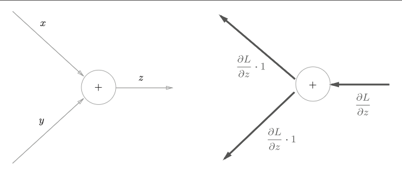
乘法反向传播

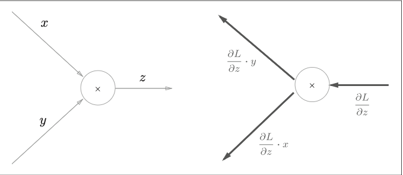
简单层的实现
乘法层的实现
import numpy as np
class MulLayer:
def __init__(self):
self.x = None
self.y = None
def forward(self, x, y):
self.x = x
self.y = y
out = x * y
return out
def backward(self, dout):
dx = dout * self.y
dy = dout * self.x
return dx, dy
|
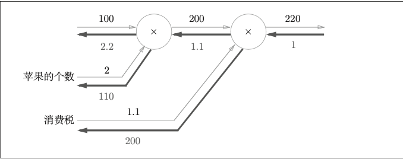
apple_price = 100
apple_num = 2
tax = 1.1
mul_apple = MulLayer()
mul_tax = MulLayer()
apple_total_price = mul_apple.forward(apple_price, apple_num)
price = mul_tax.forward(apple_total_price, tax)
print(price)
|
220.00000000000003
dprice = 1
d_apple_total_price, d_tax = mul_tax.backward(dprice)
d_apple_price, d_apple_num = mul_apple.backward(d_apple_total_price)
print(d_apple_price, d_apple_num, d_tax)
|
2.2 110.00000000000001 200
加法层的实现
class AddLayer:
def __init__(self):
pass
def forward(self, x, y):
out = x + y
return out
def backward(self, dout):
dx = dout * 1
dy = dout * 1
return dx, dy
|
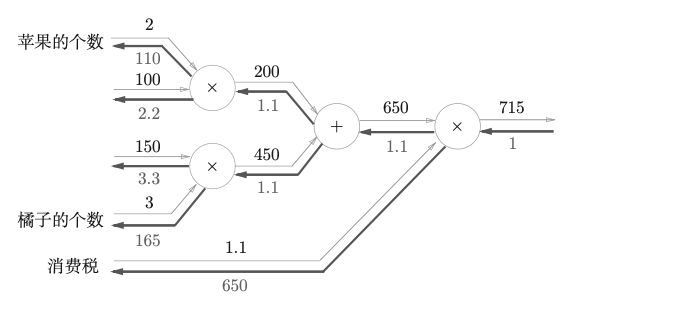
apple_price = 100
apple_num = 2
orange_price = 150
orange_num = 3
tax = 1.1
mul_apple = MulLayer()
mul_orange = MulLayer()
add_apple_orange = AddLayer()
mul_tax = MulLayer()
apple_total_price = mul_apple.forward(apple_price, apple_num)
orange_total_price = mul_orange.forward(orange_price, orange_num)
all_total_price = add_apple_orange.forward(apple_total_price, orange_total_price)
price = mul_tax.forward(all_total_price, tax)
print(price)
|
715.0000000000001
d_price = 1
d_all_total_price, d_tax = mul_tax.backward(d_price)
print(d_all_total_price, d_tax)
d_apple_total_price, d_orange_total_price = add_apple_orange.backward(d_all_total_price)
print(d_apple_total_price, d_orange_total_price)
d_apple_price, d_apple_num = mul_apple.backward(d_apple_total_price)
print(d_apple_price, d_apple_num)
d_orange_price, d_orange_num = mul_orange.backward(d_orange_total_price)
print(d_orange_price, d_orange_num)
|
1.1 650
1.1 1.1
2.2 110.00000000000001
3.3000000000000003 165.0
激活函数层的实现
ReLU层的实现
ReLU(Rectified Linear Unit)函数
%20%5Cend%7Bcases%7D%20%0A)
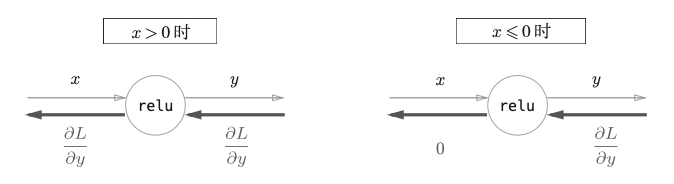
import numpy as np
x = np.array([[-1.0, 1.0, 2.0], [-0.5, 0.0, 3.0]])
print(x)
mask = (x <= 0)
print(mask)
out = x.copy()
print(out)
out[0][0] = 0
print(out)
print(x)
out1 = x
x[0]=0
print(x)
print(out1)
out[0][0] = -1
out[mask] = 0
print(out)
|
[[-1. 1. 2. ]
[-0.5 0. 3. ]]
[[ True False False]
[ True True False]]
[[-1. 1. 2. ]
[-0.5 0. 3. ]]
[[ 0. 1. 2. ]
[-0.5 0. 3. ]]
[[-1. 1. 2. ]
[-0.5 0. 3. ]]
[[ 0. 0. 0. ]
[-0.5 0. 3. ]]
[[ 0. 0. 0. ]
[-0.5 0. 3. ]]
[[0. 1. 2.]
[0. 0. 3.]]
class ReLU:
def __init__(self):
self.mask = None
def forward(self, x):
self.mask = (x <= 0)
out = x.copy()
out[self.mask] = 0
return out
def backward(self, dout):
dout[self.mask] = 0
dx = dout
return dx
|
Sigmoid层的实现

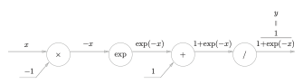
反向传播流程
步骤1
因为在计算图里，sigmoid的最后一步是

"/"节点表示$y=\frac{1}{u} $， 导数可以表示为

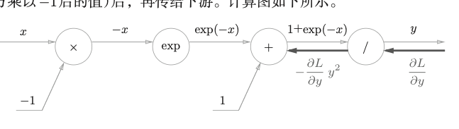
步骤2
+节点将上游传下来的值传递给下游
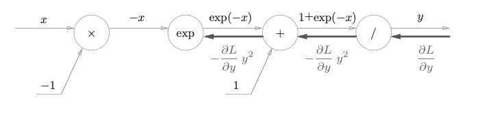
步骤3
exp节点表示y=exp(x)，导数可以表示为

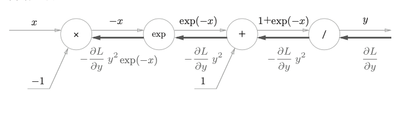
步骤4
”✖️“节点将正向传播时的值翻转后做乘法运算
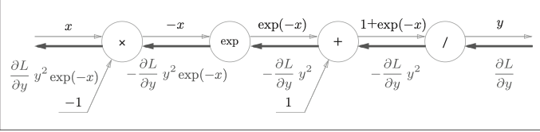
$ \frac{\partial L}{\partial y} y^2 exp(-x) $ 可以进一步整理

class Sigmoid:
def __init__(self):
self.out = None
def forward(self, x):
out = 1 / (1 + np.exp(-x))
self.out = out
return out
def backward(self, dout):
dx = dout * (1.0 - self.out) * self.out
return dx
|
Affine/Softmax层的实现
Affine层的实现
神经网络的正向传播中进行的矩阵的乘积运算在几何学领域被称为“仿射变换” 。因此，这里将进行仿射变换的处理实现为“Affine 层”。


批版本的Affine层
dy = np.array([[1, 2, 3], [4, 5, 6]])
db = np.sum(dy, axis=0)
print(db)
print(np.sum(dy, axis=1))
|
[5 7 9]
[ 6 15]
class Affine:
def __init__(self, W, b):
self.W = W
self.b = b
self.x = None
self.dW = None
self.db = None
def forward(self, x):
self.x = x
out = np.dot(x, self.W) + self.b
return out
def backward(self, dout):
dx = np.dot(dout, self.W.T)
self.dW = np.dot(self.x.T, dout)
self.db = np.sum(dout, axis=0)
return dx
|
Softmax-with-Loss层的实现
softmax函数会将输入值正规化之后再输出
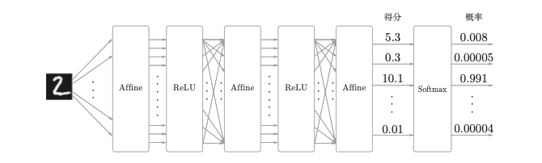
高老师说反向传播的代码框架已经实现了，可以不用研究这么多细节了，暂停学习

{kind=link}
{kind=link}
{kind=link}
{kind=link}
{kind=link}
{kind=link}
{kind=link}
{kind=link}
{kind=link}
{kind=link}
{kind=link}